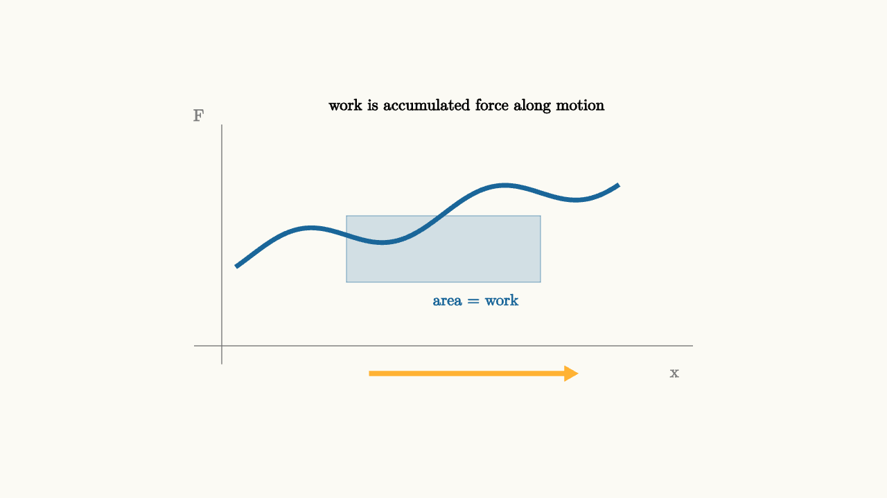

Work And Power Measure Transfer Rates
Two elevators lift identical loads through the same height. One takes ten seconds. The other takes one minute. The energy transferred to the load is the same if the height is the same, but the faster elevator needs a more powerful motor.
That distinction is the point of this lesson. Work measures energy transferred by a force through displacement. Power measures how quickly energy is transferred.
For a force acting along a path, work is
The dot product selects the part of the force along the motion. If the force is constant and aligned with the displacement, this becomes $W=Fd$. If the force changes with position, the work is the signed area under a force-versus-displacement graph.
Power is the rate of doing work:
Using the work definition, instantaneous power becomes
A force transfers energy quickly when it has a large component along a large velocity.

source
background = [0.985, 0.98, 0.955, 1]
camera = Camera(4.8b)
mesh diagram = block {
. stroke{GRAY, 1} Line(start: [-2.7, -1.05, 0], end: [2.7, -1.05, 0])
. stroke{GRAY, 1} Line(start: [-2.4, -1.25, 0], end: [-2.4, 1.35, 0])
. stroke{BLUE, 4} ExplicitFunc(|x| 0.38 + 0.22 * x + 0.18 * sin(3 * x), [-2.25, 1.9, 160])
. fill{alpha{0.18} BLUE} stroke{alpha{0.4} BLUE, 1} Rect([2.1, 0.72])
. color{ORANGE} Arrow(start: [-0.8, -1.35, 0], end: [1.45, -1.35, 0])
. center{[-2.65, 1.45, 0]} color{GRAY} Text("F", 0.65)
. center{[2.5, -1.35, 0]} color{GRAY} Text("x", 0.65)
. center{[0.25, 1.55, 0]} Text("work is accumulated force along motion", 0.62)
. center{[0.35, -0.55, 0]} color{BLUE} Text("area = work", 0.62)
}
"work as area"
play Fade(0.6)Graphs help because work is an accumulation. A force can vary from moment to moment. The total work remembers every little push along every little displacement.
Lifting makes the units concrete
Near Earth's surface, lifting a mass $m$ by height $h$ increases gravitational potential energy by
If a motor lifts the mass steadily, it transfers that much energy to the Earth-object system. The average power is
A shorter time means larger average power for the same lift. This is why power is measured in watts, where
Energy is the amount transferred. Power is the transfer rate.
source
param speed = 0.8
background = [0.985, 0.98, 0.955, 1]
camera = Camera(4.8b)
let Lift = |height, speed| block {
let power_bar = 0.35 + 0.85 * speed
. stroke{GRAY, 2} Line(start: [-2.4, -1.0, 0], end: [-2.4, 1.2, 0])
. stroke{GRAY, 2} Line(start: [-1.35, -1.0, 0], end: [-1.35, 1.2, 0])
. fill{alpha{0.22} ORANGE} stroke{ORANGE, 2} center{[-1.88, -0.78 + height, 0]} Rect([0.75, 0.45])
. color{GREEN} Arrow(start: [-1.88, -0.45 + height, 0], end: [-1.88, 0.25 + height, 0])
. fill{alpha{0.22} BLUE} stroke{BLUE, 2} center{[1.15, -0.9 + height / 2, 0]} Rect([0.35, height])
. fill{alpha{0.22} RED} stroke{RED, 2} center{[1.75, -0.9 + power_bar / 2, 0]} Rect([0.35, power_bar])
. center{[1.15, 0.82, 0]} color{BLUE} Text("energy", 0.62)
. center{[1.75, 0.82, 0]} color{RED} Text("power", 0.62)
}
"begin the lift"
mesh title = center{[0, 1.55, 0]} Text("same lift, different rate", 0.68)
mesh scene = Lift(height: 0.25, speed: $speed)
mesh caption = center{[0, -1.55, 0]} color{DARK_GRAY} Text("power = energy per time", 0.68)
play Write(0.8)
"transfer the energy"
scene = Lift(height: 1.35, speed: $speed)
play Lerp(1.2)
"make the same lift faster"
speed = 1.35
scene = Lift(height: 1.35, speed: $speed)
play Lerp(0.9)
"turn motion into a power trace"
scene = block {
. stroke{GRAY, 1} Line(start: [-2.35, -0.95, 0], end: [2.35, -0.95, 0])
. stroke{GRAY, 1} Line(start: [-2.25, -1.1, 0], end: [-2.25, 1.1, 0])
. stroke{RED, 4} ExplicitFunc(|t| 0.65 * exp(-1.2 * t * t) + 0.15, [-2.0, 2.0, 160])
. center{[-1.8, 1.35, 0]} color{RED} Text("P(t)", 0.72)
. center{[0.4, -1.35, 0]} Text("area under P(t) is energy", 0.62)
}
play Trans(1.0)The animation separates the two bars. The energy bar depends on the final height. The power bar changes when the same energy is delivered in less time.
Work can be positive, negative, or zero
The sign of work comes from the dot product. If a force helps the motion, it does positive work. If it opposes the motion, it does negative work. If it is perpendicular to the motion, it does zero work.
Gravity does positive work on a falling object because force and displacement both point downward. Gravity does negative work on a rising object because force points downward while displacement points upward. The normal force on a block sliding across a flat table does zero work because the normal force points upward and displacement is horizontal.
This sign convention is useful because it tells how kinetic energy changes:
Positive net work increases kinetic energy. Negative net work decreases it. Zero net work leaves the speed unchanged, even if individual forces are present.
Power is local
Power can change from instant to instant. A cyclist climbing a hill may put out high power at low speed because the force against gravity is large. A sprinter may put out high power because speed is large. A crane may use constant power while the lifting force and speed adjust to match the load and motor limits.
The formula $P=\vec F\cdot\vec v$ also explains why engines care about speed. At the same power, a vehicle moving slowly can exert a larger force. At high speed, the same power corresponds to a smaller driving force:
when force and velocity point the same way.
This is one reason low gears matter. They help produce large force at low speed while the engine operates in a useful power range.
Efficiency tracks useful transfer
Machines often receive more energy than they deliver as useful mechanical work. Some energy becomes thermal energy, sound, vibration, or deformation. Efficiency compares useful output to input:
For power devices, the same ratio can be written with power:
Efficiency measures how much of the transfer lands in the channel we care about.
The lesson to keep
Work and power answer different questions. Work asks how much energy a force transfers through motion. Power asks how quickly that transfer happens.
When solving, identify the displacement, take the along-motion component of force, and accumulate. If timing matters, divide by time or use $P=\vec F\cdot\vec v$. The same work can feel gentle or violent depending on the rate. Power is the part of the energy story that brings the clock back in.